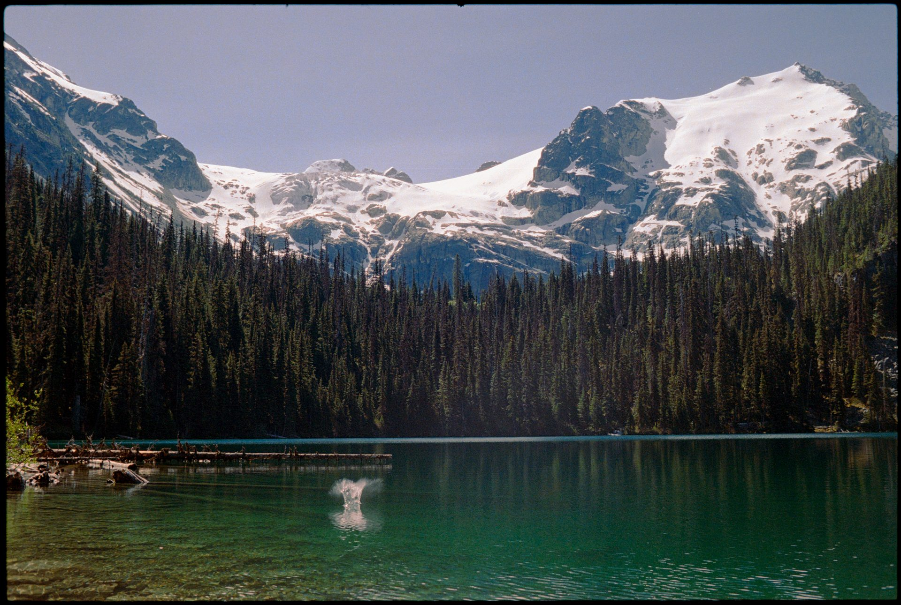
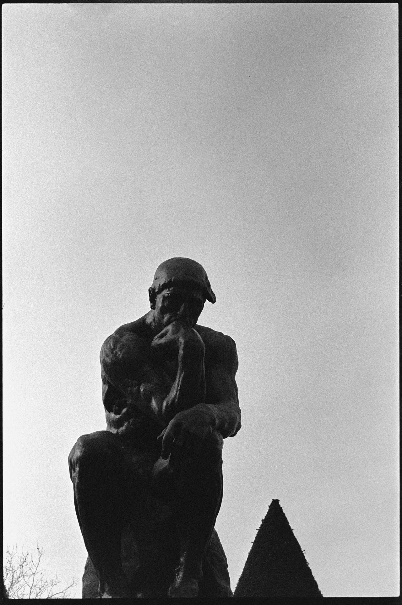
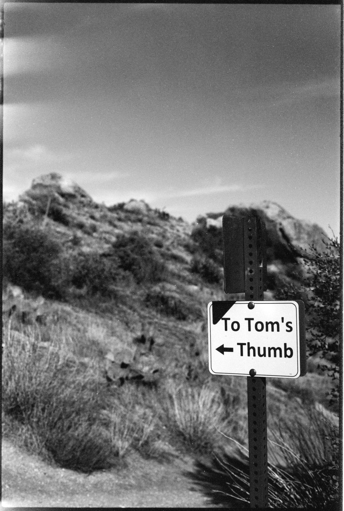
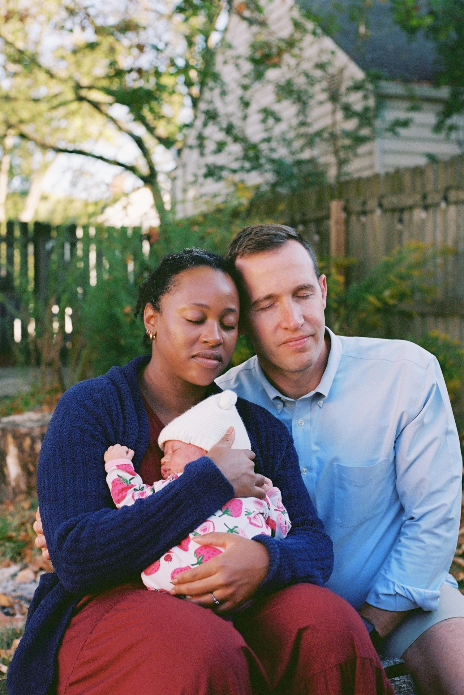
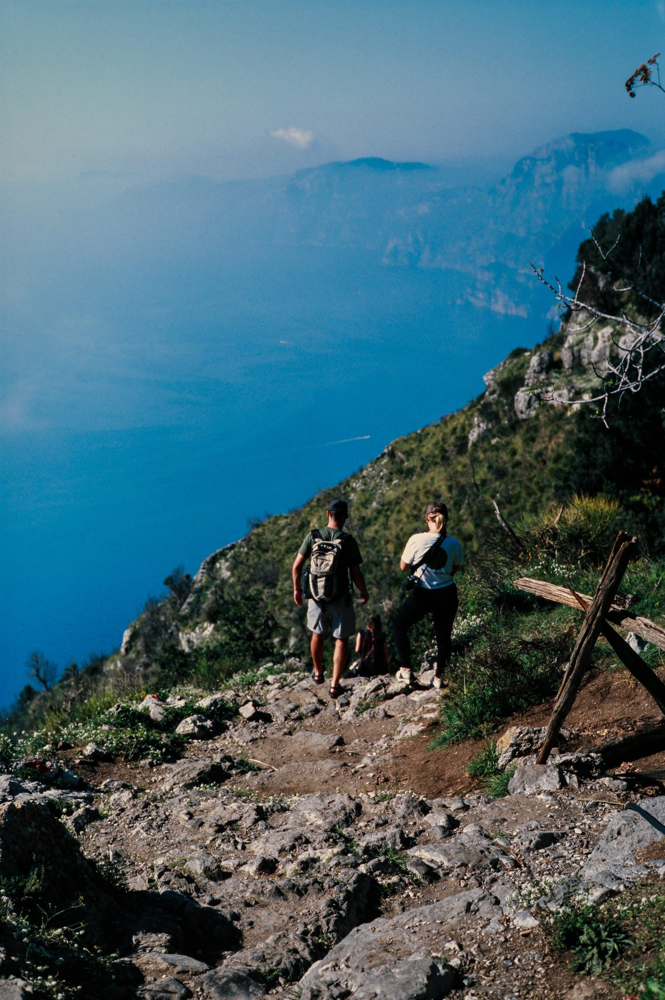

I've been shooting on film for five years. I'm not going to pretend that makes me special — a lot of people shoot on film. But I keep coming back to it, and I've been thinking about why.
Part of it is practical. Film forces you to slow down. When you have 36 frames on a roll and each one costs something — the film, the development, the scanning — you stop and actually look before you press the shutter. You think about the light. You think about where you're standing. Digital makes it easy to shoot 300 photos and sort through them later. Film makes you decide before.
But that's not the whole story. The bigger thing is what film actually looks like. The grain. The way color renders — especially on Portra 400, which has this warmth and tonal range that I've never seen replicated in any digital preset. The way Ilford HP5 handles shadows. There's a quality to the image that feels different from pixels. Not better in every situation. But different in a way that matters for certain kinds of photographs.

This shot above is from Whistler, British Columbia — Joffre Lakes, on Kodak Portra 800. I've been to a lot of places and seen a lot of water, but this glacial green stopped me. I think Portra 800 is underrated. People go for 400 because it's the standard, but 800 in good light gets this richness — a little faster, a little grainier, and somehow more alive.
February in Paris
In February I was in Paris for a week, shooting on Ilford HP5 — my black and white go-to. HP5 is forgiving, it handles a wide exposure range, and it has a grain that feels natural rather than coarse. The hero image at the top of this post is from the Pont des Arts bridge at night. The Eiffel Tower sweeps its searchlight across the city every hour. I waited for it.


The Rodin shot is from the Musée Rodin garden. I've seen The Thinker in photographs a thousand times. In person, what struck me was how small the sky makes it feel — and how much it still commands the frame. I had maybe thirty seconds of decent light before a cloud moved in. That's the thing about shooting outdoors: you're always negotiating with what's actually there.
What I'm doing with the portrait work
I've mostly shot landscapes and travel. But over the last year I've been doing portrait sessions — outdoors, natural light, film — and I've come to love what the medium does to people. Digital portraits are technically flawless. Film portraits look like something you actually want to frame.

This is from an October session in Columbus — a couple meeting their new daughter. The light was fading fast and I had maybe a roll and a half left. I'm glad I was shooting film. The grain in the shadows, the skin tones, the way the fall foliage goes soft in the background — that's Kodak doing something a phone can't.
Sessions are $500 for one hour and two rolls of film. Everything shot outside in natural light. Columbus and Central Ohio — Hayden Falls, Griggs Reservoir, Hocking Hills if you want to make the drive. Development goes to Midwest Photo here in Columbus. Scanned images back to you in about two weeks.
If you want to shoot, reach out at lotozot@gmail.com. Tell me what you're thinking and we'll figure it out.
